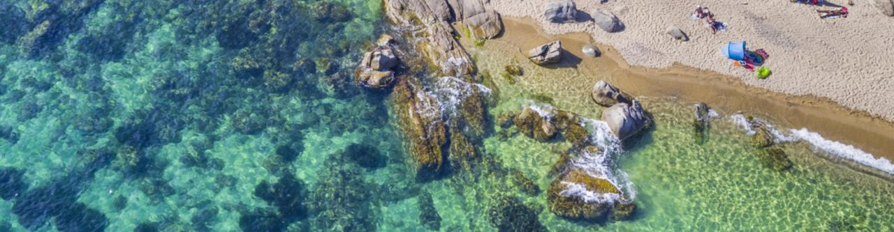

Ruta · Roses
Curt itinerari per un tram del camí de ronda que ressegueix l'abrupte litoral de la Costa Brava entre Blanes i Portbou. El camí va ser creat amb la finalitat de comunicar les poblacions costaneres…